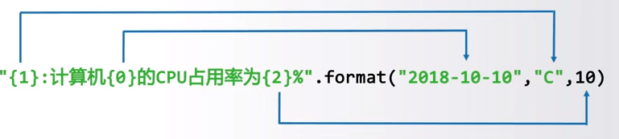

字符串:由0个或多个字符的集合
字符串’’或””
常规字符串跨多行，只要在行尾上加上’'反斜杠
当字符串内有干扰时可用’'反斜杠进行转义
长字符串
用三个连续的双引号或单引号来包很长的字符串，可在中间换行
1 | ptint:（'''To be, |
原始字符串
其内的字符串不会对反斜杠进行特殊处理
1 | print:（'C:\Program Files\nowhere') |
注意此处的r’，表示是原始字符串，不会显示，且其中的’可为”或者”‘
原始字符串无法以单个反斜杠结尾。
字符串序号
其内部为正向递增序号：0,1,2,3…(x-1)
或反向递减序号：-x,-(x-1),-(x-2)…-1
字符串的使用
索引：返回字符串中的单个字符 <字符串>[M]
切片：返回字符串中的一串字符串 <字符串>[M:N]
M缺失表示至开头，N缺失表示至结尾
1 | <字符串>[M:N:K] |
K表示根据步长K进行切片，K可为负数，进行反向符
操作符
x + y 连接x和y
n * x 或 x * n 复制n次x
x in s 如果x是s的子字符串，返回Ture，否则返回False
处理函数
| 函数 | 说明 |
|---|---|
| len(x) | 返回长度 |
| str(x) | 返回任意类型x所对应的字符串形式 |
| hex(x)或oct(x) | 返回整数x的十六进制或者八进制小写形式字符串 |
| chr(u) | u为Unicode编码，返回其对应字符 |
| ord(x) | x为字符，返回其对应Unicode编码 |
处理方法
| 函数 | 说明 |
|---|---|
| str.center(x,y=None) | 在str两边填充字符,默认为空格 |
| str.find(x,y=None,z=None) | 在str中寻找x,如果找到,返回子串第一个字符的索引,否则返回-1,还可以定义查找的起止点 |
| str.lower()或str.upper() | 返回字符串的副本，将字符串str的全部字符小写/大写 |
| str.split(sep) | 返回一个列表，由str根据sep被分隔的部分组成 |
| str.count(sub) | 返回子串sub在str中出现的次数 |
| str.replace(old,new) | 返回字符串str副本，所有old子串被new子串替换 |
| str.center(width[,fillchar]) | 字符串str在宽度为width的字符串中居中，空余量由fillchar填充 |
| str.strip(chars) | 去除字符串str的开头和结尾中所有的chars字符中的元素 |
| str.join(iter) | 在字符串iter所有元素的间隔中都加一个str，主要用于字符串的分隔 |
| str.translate | 预先建立转换表，根据转换表转换，但是只能进行单字符转换 |
translate说明:
1 | >>>table = str.maketrans('cs', 'kz') |
还可以添加第三个参数选择相应的删除
1 | >>>table = str.maketrans('cs', 'kz', ' ') |
字符串格式化
格式化是对字符串进行格式表达的方式
<模板字符串>.format(<逗号分隔的参数>)
槽{}：在模板字符串的槽{}中添加参数

槽内部对格式化的配置方式
1 | {<参数序号>:<格式控制标记>} |
指定宽度：
1 | "{num:10}".format(num = 3) |
指定精度：
1 | "{pi:.2f}".format(pi=pi) |
添加千分隔符：
1 | "One googol is {:,}".format(10**100) |
同时指定其他格式的时候，逗号要放在宽度和表示精度的句号之间。
指定对齐：
左对齐、右对齐、居中，分别使用<、>、^
1 | "{0:<10.2f}".format(pi) |
指定填充：
可以在指定宽度和精度的前面添加一个标志，可以是’0’、’+’、’-‘
1 | "{:010.2f}".format(pi) |
添加特定填充字符：
1 | "{:$^15}".format(WIN BIG) |
可用=来表示字符是填充在符号与数字之间
1 | "{:=10.2f}".format(-pi) |
‘#’放在说明符与宽度之间，可以触发另一种转换方式。
1 | 二进制、八进制、十六进制： |
十进制会要求必须包含小数点
1 | "{:#g}".format(42) |
字符串设置中的类型说明符
| 说明符 | 说明 |
|---|---|
| b | 用二进制数来表示 |
| c | 用Unicode码点来表示 |
| d | 将整数视为十进制来表示 |
| e | 用科学计数法表示（指数用e） |
| E | 用科学计数法表示（指数用E） |
| f | 将小数表示为定点数 |
| F | 与f相同，但对于特殊值(nan和inf)，用大写表示 |
| g | 自动在定点表示法和科学计数法之间做出选择，默认用于小数说明 |
| G | 与g相同，但使用大写来表示指数与特殊值 |
| n | 与g相同，但插入随区域而异的数字分隔符 |
| o | 用八进制来表示 |
| s | 保持字符串的格式不变 |
| x | 用十六进制表示 |
| X | 与x相同，但使用大写字母 |
| % | 将数表示为百分比值 |
字符串的编码为Unicode
使用16位或者32的十六进制字面量（加前缀\u或\U）
使用字符的Unicode名称（\N{name}）
为了进行文件写入、C语言互传输等，可转换为类型：不可变的bytes和可变的bytearray